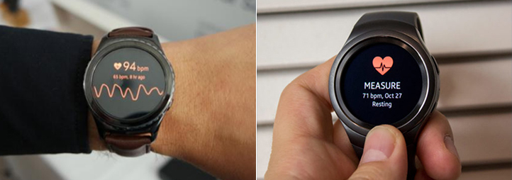
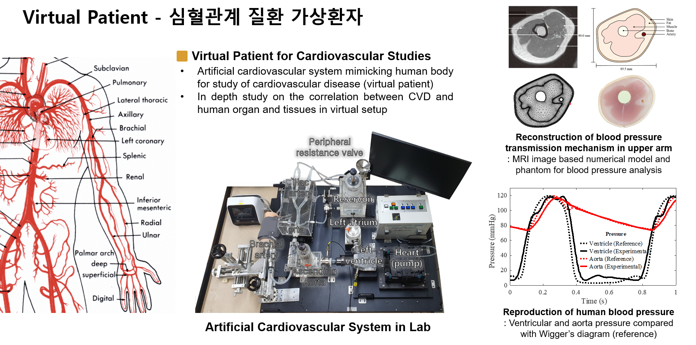
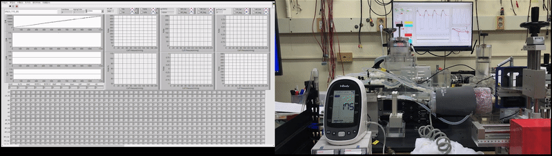

Research
Human Vibration & Health Sensors

- Research
- >
- Human Vibration & Health Sensors
Biometric Recognition
Human Lab에서는 기반기술인 진동시스템 모델링 및 해석 기술을 인체진동(Human Vibration) 분야에 확장하여 생체의 특징을 인식하고 이를 건강상태 모니터링에 적용하는 연구를 수행하고 있습니다. 이를 통해 건강과 관련된 혈압, 혈당, 피부, 근육, 지방, 혈관 탄력도 등 생체정보를 비침습 방식(Non-invasive)으로 실시간 검출할 수 있는 헬스센서를 제안하고, 이를 통해 최신 웨어러블 기기에 탑재할 수 있도록 소형의 스마트 센서 및 인식 알고리듬 개발을 목표로 하고 있습니다.
심혈관계는 심장이 파워소스가 되어 전신으로 혈류와 혈압파가 전파되는 하나의 진동신호전달 시스템으로 볼 수 있습니다. Human Lab에서는 이러한 인체 심혈관계 전체를 모사하는 가상환자 (Virtual Patient) 시스템을 구축하였습니다. 이를 통해 심장에서 가해지는 규칙적인 압력이 대동맥을 거쳐 팔(상완부)에 전달되고 외부의 혈압계(커프)에 최종적으로 어떻게 전달되는 지를 실험적으로 규명하였습니다. 이는 KAIST만이 가진 고유한 심혈관계 측정 시스템이며, 혈압의 전달 메커니즘과 그 과정에서 심혈관계의 주요 건강지표인 혈관의 두께, 탄성, 직경 등의 효과를 Virtual Patient 내에서 직접 관찰할 수 있게 되었습니다. 이를 통해 심혈관계 질환인 동맥경화, 부정맥 등을 혈압계를 통해 조기 예측하는 차세대 스마트 혈압계와 이와 관련된 AI 알고리듬을 개발하고 있습니다.
피를 뽑지 않고 비침습적으로 혈당을 측정하는 Non-invasive Glucose Sensor는 전세계 4억의 당뇨병 환자가 바라는 센서입니다. 삼성, 애플, 구글 등 전세계 Top Maker 들이 뛰어들고 있는 이 경쟁에 Human Lab에서는 인체진동특성 변화를 이용하는 독특한 방법으로 참여하고 있습니다. 손가락 끝, 귓불, 콧등 등, 점액질이 대다수인 조직에 있어서 Glucose의 양적 변화는 미세한 질량의 변화를 나타냅니다. 이는 진동공학적으로 신체를 포함한 시스템의 고유진동수의 변화를 야기하며, 고유한 진동센서구조를 통해서 신체내의 Glucose 양을 비침습적으로 측정할 수 있습니다. 현재 기초 원리검증을 완료한 단계이지만, 여러가지 노이즈와 시변성을 고려하고 충분한 양의 데이터를 학습한다면 가까운 미래에 비침습 혈당센서가 상용화 될 수 있을 것이라 예상하고 있습니다.
추가적으로, 사용자 손가락의 진동특성을 이용한 개인식별기(Biometric Personal Authentication)는 플렉서블 휴대폰 등 미래형 개인기기의 생체인식 솔루션을 목표로 개발하고 있고, 피부의 공명을 이용한 피부 탄성력 측정센서는 미용, 노화 연구를 위한 웨어러블 센서를 목표로 개발하고 있습니다. 이 밖에 인체진동을 이용한 다양하고 풍부한 헬스센서 아이디어들을 제안하고 검증 중에 있습니다.

- Non-invasive, wearable, continuous real-time health sensor for human body diagnosis (blood pressure, diabetes, skin etc.)
- Bio characteristics identification with human body vibration, coupled-field analysis and Machine Learning
-
Virtual Patient System for CVDs
- A novel bio-signal processing scheme with Machine Learning for biomarker identification and health monitoring
Wearable Biometric Sensors for health monitoring of human body (concept)


